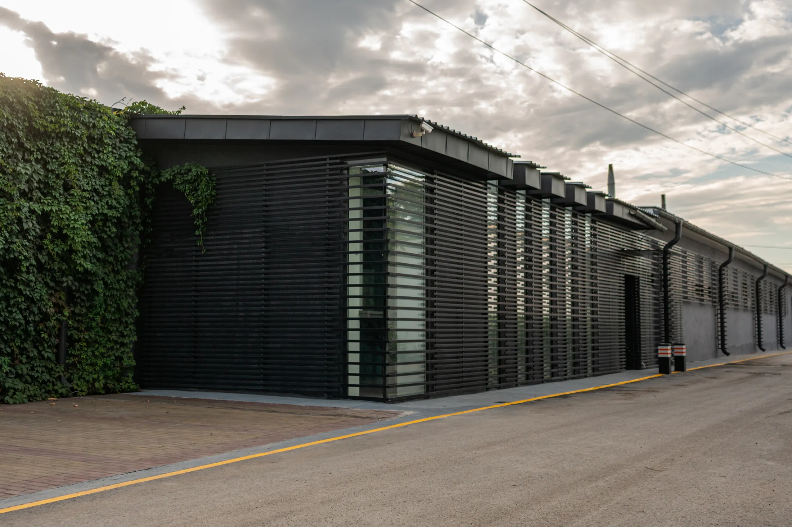

01
Офис
Приглашаем в офис, чтобы обсудить задачу и дальнейшее сотрудничество.

Самари Про КЗ · Караганда
Берём на себя изготовление и монтаж. Работаем с объектом последовательно: встречаемся, уточняем задачу, производим конструкции, устанавливаем и остаёмся на связи после сдачи.
Приглашаем в офис, чтобы обсудить задачу и дальнейшее сотрудничество.

Изготавливаем конструкции под согласованные параметры объекта.

Выполняем монтаж, сдаём результат и обслуживаем конструкции после завершения работ.
Опишите задачу своими словами — технические вопросы уточним вместе.